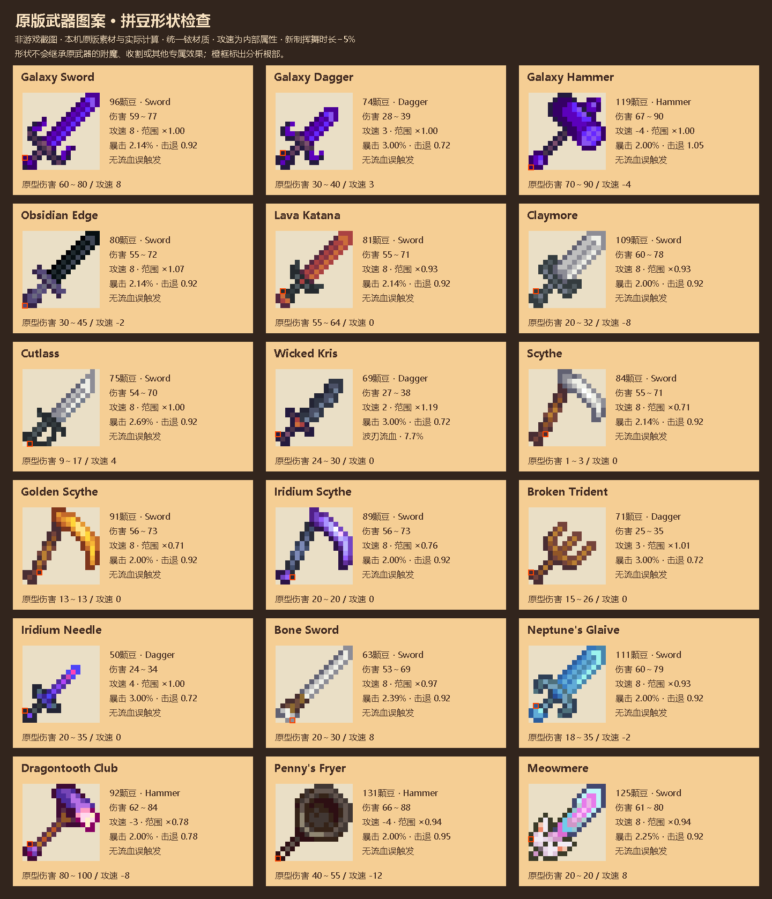

武器形状与重量1.1.0-RC4 · 非游戏截图
由当前代码实际计算生成的铱材质对照。未使用 AI 生图；图案可自由绘制，颜色与画布空白不参与数值。此页不模拟实际挥舞或命中。
96豆原版银河剑轮廓59～77伤害 · 攻速8基准与原型一致；新制武器额外缩短5%普通挥舞时长，避免整数+1导致速度翻倍。同样92豆的直剑／弯剑均为57～74伤害沿曲线路径计算，不因为回弯丢掉刀刃。满格32格铱剑84～110伤害 · 攻速−18超过256豆后累进重量减速，不因基准提速变轻。
原版图案交叉检查
共检查67张原版武器及工具图案，以及居中放入24／32格画布后的结果；所有对照统一铱材质，形状不会继承原型附魔或特殊功能。铱镰刀的像素阶梯已修复，不再误判锯齿。

建议后续评估：细长尖刺的小幅穿甲、钩形刃的轻微牵引。当前未添加这些效果，也不因三叉结构增加攻击次数。
现有桌面、紧凑与手柄布局
保留双栏和已有控件比例。制作确认补齐伤害；攻速包含各金属基准和重量调整。实际中文字号、手柄手感与安卓加载仍需实测。

装修质感与操作修复
之前完成的吸管、确认导航、装修回滚和联机等待修复一并保留。查看装修纹理对照。
尚需游戏内验收
四向挥舞、镰刀状图案的实际覆盖范围、重武器手感、流血的怪物反应与掉落、双人同步、装修遮挡及安卓触控。候选包在预览审阅后生成，当前不覆盖线上版本。